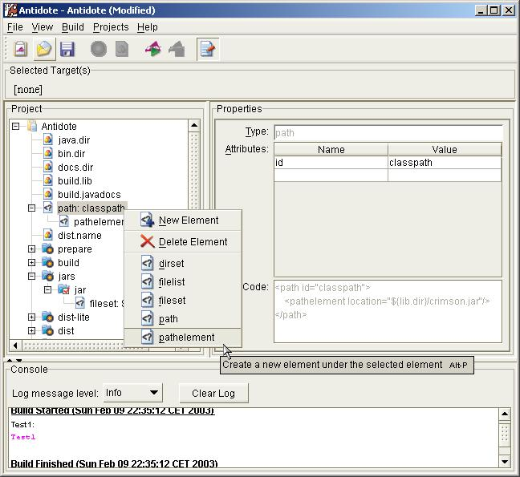

About Antidote
About
ANTidote is the GUI for Ant...
... in fact it is the Ant GUI by the Apache Ant project itself, because, as you might know, there are several other graphical user interfaces covering Ant. Most of them are integrated in IDEs such as NetBeans or Eclipse. To be honest Antidote has started a long time ago (spring 2000) and was designed to become integrable into IDEs by it's original Author Simeon H. K. Fitch, who did the most work on Antidote. Unfortunately the Antidote community never came really "to speed" and so the IDE-guys where faster with their integrations.
With these other Ant GUIs Antidote became less important and it seemed there was not much interest in such a tool...
Anyways: The "sleeping beauty" Antidote has been awaken and is now being developed to a full featured, stand alone, JFC/Swing-based Ant GUI to graphically create, edit and run build-files to be quite useful for the developer who do not use an IDE at all. So one of the goals of Antidote development is to make it small, fast and really neat :)!
Get a glimpse

This is a screenshot of how Antidote looks today. Still there is, of course, a lot to do and you are welcome to contribute! It shows Antidote using a custom look and feel called "Metouia" which you can find here if you want to try it!
Get Involved
Antidote is discussed on the main Ant mailing lists you can find here: